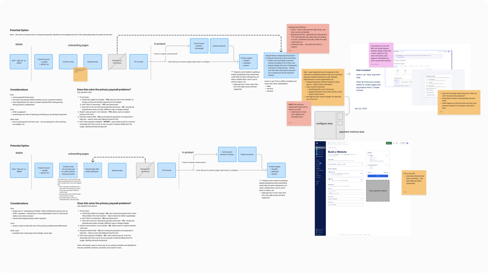
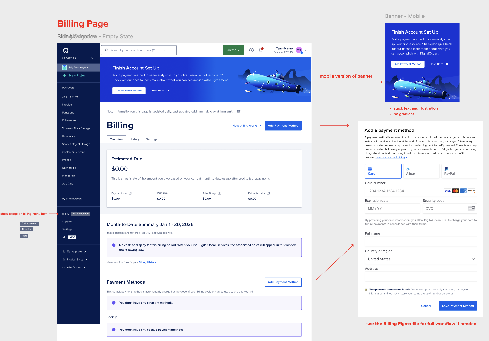

During this project, I redesigned and moved the paywall experience from being a part of the sign up flow to be later in the user journey to allow greater product exploration before requiring payment. By synthesizing past findings and mapping key user pain points through a “Why Waterfall” analysis, I identified trust, communication clarity, and payment access as primary barriers. I then defined an ideal user flow and designed a streamlined, context-aware payment prompt experience across multiple entry points. This work required close cross-functional collaboration with many stakeholders across the company to align on design and implementation needs. The final solution improved user engagement with core product features, improved user sentiment, and reduced previous paywall friction. Read on to learn more about my process leading this projct.

To begin this project, I started to review past research that others had conducted during a previous attempt at moving the paywall out of the sign up flow and into the console. While there was a lot of tribal knowledge and lost research due to moving research platforms, I was able to gather several key insights from the last attempt to help inform changes to make this project more likely to be successful. Some examples:
- Clear communication about the paywall and its placement in the user journey is crucial for user understanding and acceptance. This was a critial piece that was missing in the previous attempt.
- Users know that at some point they will need to provide payment information to create cloud resources. However, adding a payment method can be a barrier to entry for some users, especially those that are signing up to use the platform for work and do not have ready access to a company credit card.
- Users like being able to explore the platform without needing to provide payment information upfront.
Finally, I wanted to better understand current pain and friction points in the current user experience when interacting with the paywall. I created a "Why Waterfall" diagram to dig into these pain points and identify root causes that we could considering addressing as a part of this work. I presented this to the lead product manager of this initiative and worked with her to determine what concerns to prioritize moving forward. Some of the key insights we decided to address included:
- Users signing up to use the platform for work may not have ready access to a company credit card
- Lack of communication creates a black box experience
- General lack of trust - why do we need this information?

User Journey: After conducting user research and analyzing the "Why Waterfall" diagram, I started to map out the ideal user journey to prompt users to add a payment method. This included exploring different touchpoints and potential pitfalls of each. Ultimately, I decided to push the paywall as far back into the user journey as possible - prompt users to add a payment method before they are able to create a resource. This allowed for users to explore everywhere in the platform, including the product create pages (frequently visited when users are interested in comparing prices and understanding what type of configuration settings are available for various resources).
UI Design: After outlining the user journey, I began designing the UI for the paywall. Based on my research at the beginning of this project, I knew that I needed to focus on clear communication to ensure users would not be surprised or run into additional friction wherever the paywall was placed. Because of this, I opted to display clear messaging and calls to action in the platform if a user had not yet added a payment method. Messaging was kept clear and concise with additional documentation links in case users had concerns or questions and allowed users to pre-emptively add a payment method before they began creating resources.

Next, I designed what the paywall experience would look like when a user didn't have a payment method added. I wanted to keep this process as friction free as possible and keep the user in context as much as possible. While there was a slight challenge to due this on some pages due to a current migration from one development framework to another, I was able to limit the amount of steps required by utlizing a modal directly on the page to add a payment method. When that wasn't possible for pages using the old development framework, I directed users to the existing billing page to add their payment method.


One major challenge for this work included the amount of coordination required from a variety of stakeholders and teams. Since we were moving the paywall out of the sign up flow (somehthing my team exclusively owned) and into a range of areas in the platform that were owned by other teams, this meant that there were many designers, product managers, and engineers that we needed to collaborate with to ensure a smooth transition and successful implementation. To help with this collaboration, I ensured that relevant stakeholders were included in various stages of the design process through meetings, slack communications, etc. This helped build new lines of communications and ensured we were all aligned on timelines, project scope, and deliverables.
Overall, this project was a success from team collaboration, user experience, and business standpoints. After implementing the changes, we saw a slight increase in the amount of users completing the sign up process, a decrease of users adding a payment method (-8%), and a slight increase in users becoming engage by spinning up a resource (+2%). This showed that the new placement of the paywall allowed users to explore the platform until they were ready to commit, leading to a more positive user experience and allowed the business to better identify more high intent users.